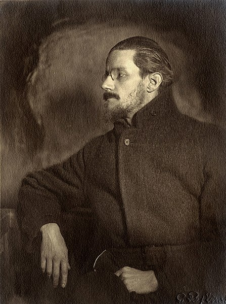
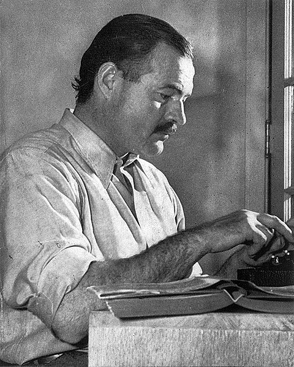

Modernist literature
The Modersnist Period starts at the beginning of the 20th century until perhaps 1965. That period has in it two World Wars and it's a challenging one since both of these wars influenced literature. The First World War (1914-1918) brought terror and horror to societies and for a moment people hoped that there will be no other war to follow. Noone could ever imagine that the Second World War was going to happen in such a short period. The characteristics of this literature era are the separation from nature, the tendency of authors to experiment and the estrangement of people. There was also the need to remove the importance of tradistions since this belonged in the past of Victorian age and literature was seeking for something entirely new.
There were many figures that influenced this new era coming from the previous century, like Friedrich Nietzsche and Sigmund Freud. In the Modern Literature there were some standards about which art would be considered low and which one would be considered high. These standards were set by journals usually. The fact that some artists didn't want to follow these standards lead them to alienation. That doesn't mean that the reading audience would always like these standards, and sometimes these artists or writers would still be successful. In the previous periods we could see that the equality in societies was inconsiderable. People were being distinguished in classes and their family name and color skin mattered. This was meant to change in the 20th century and it began with artists. Before, in the 19th century those artists voices wouldn't be heard in the public and would be dismissed. This is the very first time that they have achieved something that seemed impossible, mostly because the way of thinking of people was changing and there was tolerance for differentiation. Harlem Renaissance took place in Harlem, New York during 1920s and it was an artistic outbreak. African-Americans were then able to join. Apart from that, women were becoming the most influential figures of genres like Imagism. Poets tend to consider the previous century's works unworthy except from Gerard Manley Hopkins and the French Symbolists. Hopkins invented new poetic rhythms but he also never published his works. He was just talented, he never got any education and one day he started writing. Poets today are just like him, they teach their own selves and they do not really mind the criticism of the audience about their works. During that period and the beginning of WWI there was another movement of poetry called Imagism. In this movement the language that was used in poems was including only the most valuable content and removing everything else. By using this minimalist approach the reader was focusing only to the main point of the poem's words. The language was sharp, clear and the authors had the advantage of choosing any topics that they wanted without focusing only on nature and beauty like in previous eras. Some poets of that era are Ezra Pound, Hilda Doolittle, Amy Lowell, D.H. Lawrence. One of the major poets of this century was Thomas Stearns Eliot (T.S. Eliot). His style of writing was considered modern. The language he used was transforming unexpectedly from formal to a conversational style because he liked to experiment. In his poem The Waste Land he experiments a lot by changing his style throughout the poem, sometimes it even seemed more like prose rather than poetry. A group of writers from America called The Lost Generation is part of Modernism. It was the time of the First World War and those writers had lost the meaning of life. Ernest Hemingway was a writer of that era and in the way he writes it is clear that he is steep and blunt and the language is simple. Novel literature had some major changes in this period, the narrator was now unreliable and made readers being not so sure about what was happening in novels, questioning even facts that were supposed to be clear. This can be seen in novel Ulysses by James Joyce in which most of the incidents were works of the mind and consciousness. In the Post-Modern period, after the Second World War, the main caracteristic of the style of writers was that they were all more optimistic and the audience had a whole new idea of artists as well. In fact, artists could change people's way of thinking and help them see the reality.
-

Fig14. - T.S. Eliot, uploaded at Wikipedia's United States public domain by user Bede735c T.S. Eliot
Born in the USA but became British subject after he moved there
1888-1965
One of the 20th century's major poets
Poet, dramatist, literary critic, editor -

Fig15. - James Joyce, uploaded at Wikipedia's United States public domain by user Modra James Joyce
Irish novelist
1882-1941
Influential and important author of the 20th century
Literary style of stream of consciousness -

Fig16. - Ernest Hemingway, uploaded at Wikipedia's United States public domain by user Bede735 Ernest Hemingway
American novelist
1899-1961
Influenced the 20th century fiction
Journalist